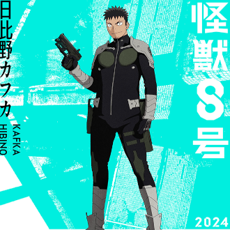
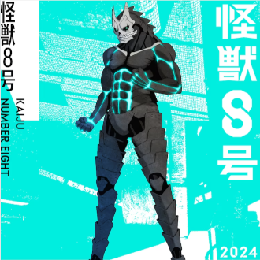
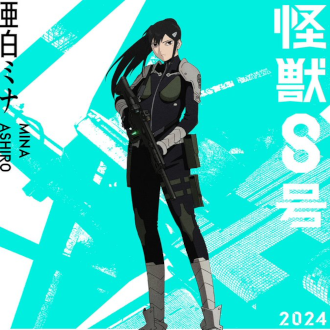
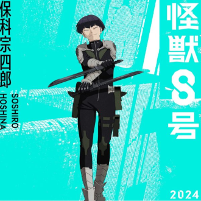
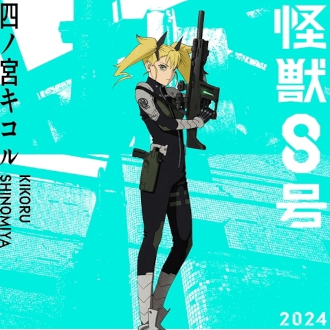
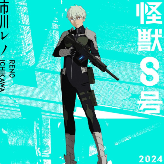

-
Kafka Hibino
Descrição
Kafka é o protagonista da obra, com o sonho de se tornar um oficial da Força de Defesa contra Kaijus, acaba tendo seu destino mudado quando em uma de suas limpezas no trabalho, é atacado e ferido por um Kaiju! Logo após esse fato, Kafka é levado para o hospital onde uma espécie pequena de kaiju infecta seu corpo e o mesmo passa a se transformar em uma Kaiju extremamente poderoso! Kafka se vê então com poderes incríveis, porém tendo que esconde-los.
-
Kaiju Nº 8
Descrição
Kaiju No 8, como é chamado pela Força de Defesa, é um Daikaju extremamente poderoso que luta contra outros Kaijus para defender a populaçõa! O motivo? Sua verdadeira identidade é Kafka Hibino, um integrante da Força de Defesa cujo objetivo é proteger à todos dos Kaijus malignos
Mina Ashiro
Descrição
Mina Ashiro é a amiga de infância de Kafka Hibino e uma das melhores Capitãs da Força de Defesa. Atualmente, ela lidera a Terceira Divisão na Base de Tachikawa, e é conhecida por sua imensa produção de Poder de Combate Liberado. Muitos dos Oficiais da Terceira Divisão a creditam por seu desejo de estar na Força de Defesa.
Soshiro Hosina
Descrição
Soshiro Hoshina é o Vice-Capitão da Terceira Divisão. Ele vem de uma longa linhagem de espadachins e insiste em usar espadas em vez de armas durante as batalhas contra Kaijus. Hoshina frequentemente ouvia que lutar com espadas era uma habilidade desnecessária no mundo atual. Felizmente, Ashiro deu a Hoshina a chance de provar seu valor, e agora ele é um dos melhores combatentes da Força de Defesa.
Kikoru Shinomiya
Descrição
Kikoru Shinomiya é um tanto protagonista em Kaiju No. 8. Kikoru é um Legado da Força de Defesa e a maior pontuadora em termos de Poder de Combate Liberado entre os mais novos Oficiais da Terceira Divisão. A mãe de Kikoru, Hikari, é uma das grandes e falecidas Oficiais da Força de Defesa, e seu pai, Isao, é o Diretor Geral da Força de Defesa. Devido à sua linhagem, Kikoru sente muita pressão para ser absolutamente perfeita.
Reno Ichikawa
Descrição
Reno Ichikawa é um jovem ambicioso que também aspira a fazer parte da Força de Defesa. Ele se torna colega de trabalho de Kafka na Monster Sweeper como tática para aprender mais sobre os Kaiju para o exame escrito. Reno está sempre pensando no que precisa fazer para se tornar mais poderoso, para que possa erradicar os Kaiju de uma vez por todas.